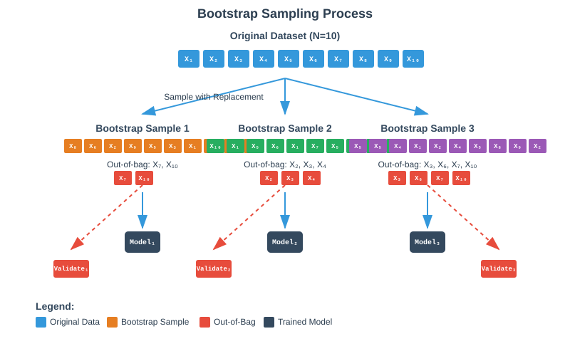
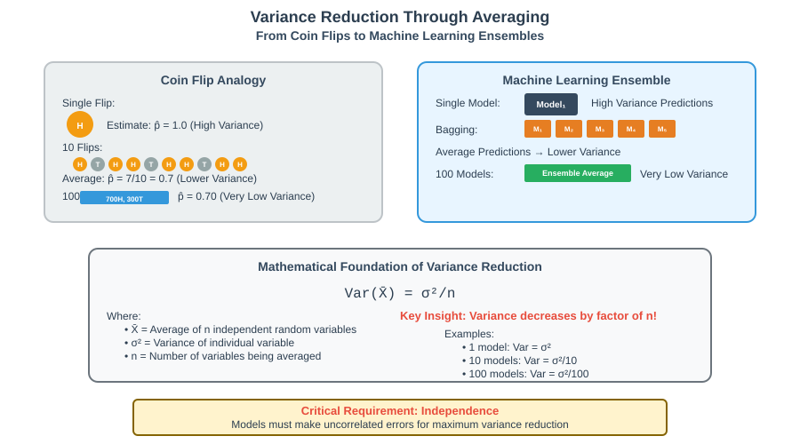
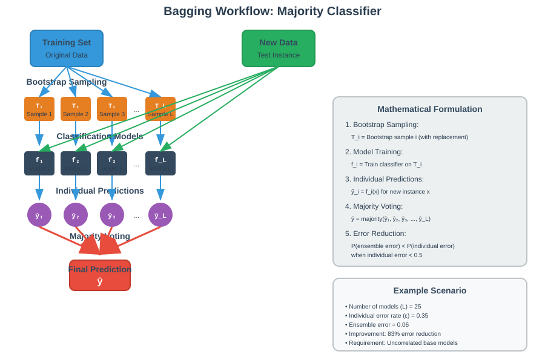
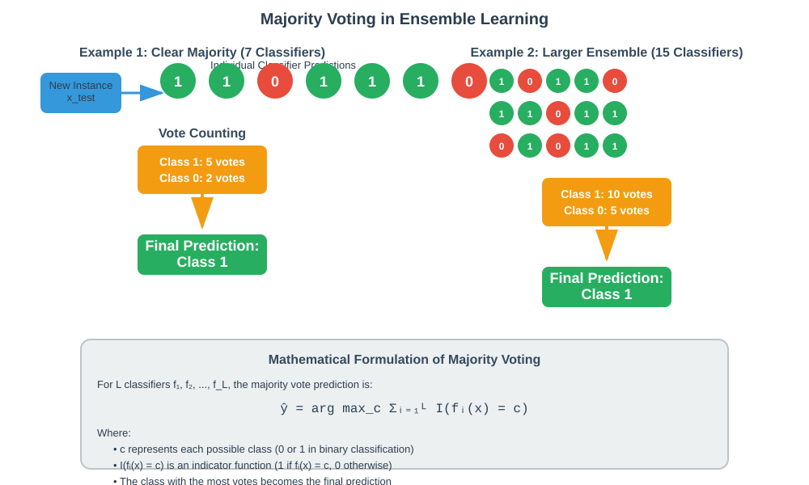
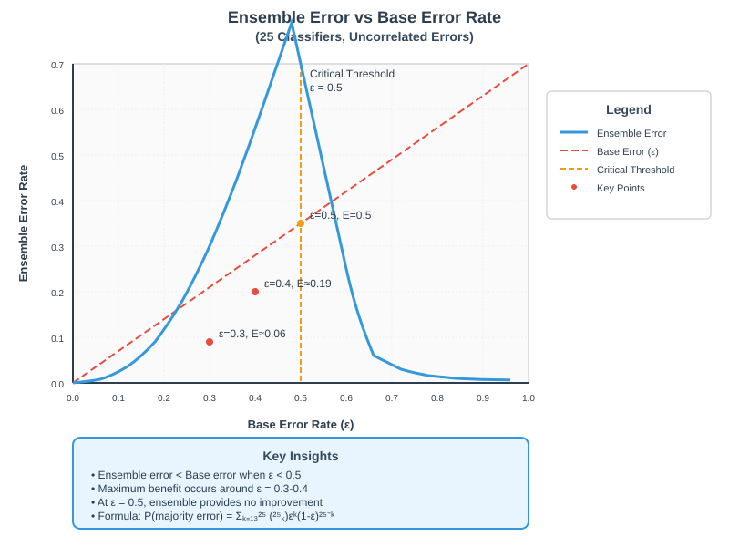

Ensemble Learning and Bagging
🧭 Quick Navigation
- Overview
- Theoretical Foundation
- Bootstrap Sampling
- Bagging Algorithm
- Majority Voting Analysis
- Implementation Examples
- Model Comparison
- References & Further Reading
📊 Overview
Ensemble Learning is a powerful machine learning paradigm that combines multiple models to create a stronger predictor than any individual model. Bagging (Bootstrap Aggregating) is one of the most fundamental ensemble methods, forming the foundation for algorithms like Random Forest.

Key Benefits
- Variance Reduction: Averages out individual model errors
- Improved Generalization: Better performance on unseen data
- Robust Predictions: Less sensitive to outliers and noise
- Parallel Training: Models can be trained independently
Historical Context
- Tin Kam Ho: Pioneered Random Subspace Methods
- Breiman & Cutler: Trademarked "Random Forest" combining bagging with random feature selection
- Amit & Geman: Independent characterization of Random Forest aspects
🔬 Theoretical Foundation
Variance Reduction Principle
The core insight behind ensemble learning comes from probability theory: averaging independent random variables reduces variance.

Consider estimating the probability of heads in a biased coin:
- Single flip: High variance estimate
- Multiple flips averaged: Lower variance, more accurate estimate
- Key requirement: Independence between measurements
Mathematical Foundation
For independent estimators with variance σ², the ensemble variance is:
Where: - \(\bar{X}\) = average of n estimators - \(n\) = number of estimators - \(\sigma^2\) = variance of individual estimator
This principle directly translates to machine learning ensembles.
🎲 Bootstrap Sampling
Bootstrap Methodology
Bootstrap sampling creates multiple datasets by sampling with replacement from the original training data.

Algorithm Steps
- Original Dataset: Start with dataset of size N
- Sample Creation: Create k bootstrap samples, each of size N (with replacement)
- Train Models: Train one model per bootstrap sample
- Out-of-Bag Data: Use unsampled data for validation
Example Bootstrap Process
Given original dataset: [X₁, X₂, X₃, X₄, X₅, X₆, X₇, X₈, X₉, X₁₀]
Bootstrap Sample 1: [X₈, X₆, X₂, X₉, X₅, X₃, X₁, X₄, X₈, X₂]
- Out-of-bag: [X₃, X₇, X₁₀]
Bootstrap Sample 2: [X₁₀, X₁, X₅, X₆, X₁, X₇, X₅, X₉, X₁, X₈]
- Out-of-bag: [X₂, X₃, X₄]
Key Properties
- Dataset Correlation: Bootstrap samples are correlated but become reasonably independent for large datasets
- Diversity: Different samples lead to different model behaviors
- Coverage: Each sample covers ~63.2% of original data on average
🚀 Bagging Algorithm
Complete Bagging Process
# Bagging Algorithm Pseudocode
def bagging_algorithm(X, y, n_estimators, base_estimator):
models = []
for i in range(n_estimators):
# Bootstrap sampling
X_bootstrap, y_bootstrap = bootstrap_sample(X, y)
# Train base model
model_i = base_estimator.fit(X_bootstrap, y_bootstrap)
models.append(model_i)
return models
def predict(models, X_test):
predictions = [model.predict(X_test) for model in models]
return majority_vote(predictions)
Model Training
For each bootstrap sample i:
Where: - \(f_i\) = classifier trained on bootstrap sample i - \(\epsilon_i\) = misclassification error for classifier i
Aggregation Strategy
Classification: Majority voting
Regression: Average predictions
📈 Majority Voting Analysis
Mathematical Framework

The probability that the majority of classifiers make an incorrect prediction:
Where:
- \(l\) = total number of classifiers
- \(\epsilon\) = uniform error rate of each classifier
- \(k\) = number of classifiers making errors
Practical Example
Scenario: - 25 bootstrap training sets → 25 classifiers - Each classifier has error rate ε = 0.35 - Errors are uncorrelated
Calculation:
Result: Ensemble error (6%) << Individual error (35%)

Key Insights
- Critical Threshold: Individual error must be < 0.5 for ensemble benefit
- Exponential Improvement: Error reduction is exponential in ensemble size
- Independence Assumption: Requires uncorrelated base model errors
💻 Implementation Examples
Google Colab Integration

Scikit-learn Implementation
from sklearn.ensemble import BaggingClassifier
from sklearn.tree import DecisionTreeClassifier
from sklearn.datasets import make_classification
from sklearn.model_selection import train_test_split
from sklearn.metrics import accuracy_score
# Generate sample data
X, y = make_classification(n_samples=1000, n_features=20,
n_informative=15, n_redundant=5,
random_state=42)
# Split data
X_train, X_test, y_train, y_test = train_test_split(
X, y, test_size=0.3, random_state=42)
# Create bagging classifier
bagging = BaggingClassifier(
base_estimator=DecisionTreeClassifier(),
n_estimators=100,
max_samples=0.8,
max_features=0.8,
bootstrap=True,
random_state=42
)
# Train and evaluate
bagging.fit(X_train, y_train)
y_pred = bagging.predict(X_test)
accuracy = accuracy_score(y_test, y_pred)
print(f"Bagging Accuracy: {accuracy:.4f}")
Custom Bagging Implementation
import numpy as np
from sklearn.tree import DecisionTreeClassifier
from collections import Counter
class CustomBagging:
def __init__(self, base_estimator, n_estimators=10):
self.base_estimator = base_estimator
self.n_estimators = n_estimators
self.estimators = []
def _bootstrap_sample(self, X, y):
n_samples = X.shape[0]
indices = np.random.choice(n_samples, n_samples, replace=True)
return X[indices], y[indices]
def fit(self, X, y):
self.estimators = []
for _ in range(self.n_estimators):
# Bootstrap sampling
X_bootstrap, y_bootstrap = self._bootstrap_sample(X, y)
# Train estimator
estimator = self.base_estimator.__class__(**self.base_estimator.get_params())
estimator.fit(X_bootstrap, y_bootstrap)
self.estimators.append(estimator)
return self
def predict(self, X):
predictions = np.array([est.predict(X) for est in self.estimators])
# Majority voting
final_predictions = []
for i in range(X.shape[0]):
votes = Counter(predictions[:, i])
final_predictions.append(votes.most_common(1)[0][0])
return np.array(final_predictions)
📊 Model Comparison
| Method | Variance | Bias | Interpretability | Training Time | Prediction Time |
|---|---|---|---|---|---|
| Single Decision Tree | High | Low | High | Fast | Fast |
| Bagging | Low | Low | Medium | Medium | Medium |
| Random Forest | Low | Low | Low | Medium | Medium |
| Boosting | Low | Variable | Low | Slow | Medium |
Performance Characteristics
Strengths of Bagging
- ✅ Variance Reduction: Excellent for high-variance models
- ✅ Parallel Training: Models train independently
- ✅ Stability: Consistent performance across datasets
- ✅ Overfitting Reduction: Natural regularization effect
Limitations
- ❌ Bias: Cannot reduce bias of base learners
- ❌ Interpretability: Lost with multiple models
- ❌ Memory: Requires storing multiple models
- ❌ Feature Correlation: Less effective with highly correlated features
When to Use Bagging
Ideal Scenarios: - High-variance base learners (e.g., deep decision trees) - Sufficient training data for bootstrap sampling - Computational resources for multiple models - Focus on predictive performance over interpretability
Avoid When: - Base learners already have low variance - Very small datasets (< 100 samples) - Strong interpretability requirements - Severe computational constraints
🧠 Advanced Concepts
Out-of-Bag Error Estimation
Since each bootstrap sample excludes ~36.8% of data, these out-of-bag (OOB) samples can be used for validation without a separate test set.
def oob_score(self, X, y):
n_samples = X.shape[0]
oob_predictions = np.full(n_samples, np.nan)
for i, estimator in enumerate(self.estimators):
# Get OOB samples for this estimator
oob_indices = self._get_oob_indices(i, n_samples)
if len(oob_indices) > 0:
oob_predictions[oob_indices] = estimator.predict(X[oob_indices])
# Calculate accuracy on OOB predictions
valid_mask = ~np.isnan(oob_predictions)
return accuracy_score(y[valid_mask], oob_predictions[valid_mask])
Relationship to Random Forest
Random Forest extends bagging by adding random feature selection:
- Bootstrap Sampling: Same as bagging
- Random Features: At each split, consider only √p features (where p = total features)
- Aggregation: Majority voting for classification, averaging for regression
Theoretical Guarantees
For bagging with infinite estimators and perfect bootstrap independence:
Where \(\rho\) is the correlation between base learners.
🔗 References & Further Reading
📚 Foundational Papers
- Breiman, L. (1996). "Bagging Predictors". Machine Learning, 24(2), 123-140.
-
Breiman, L. (2001). "Random Forests". Machine Learning, 45(1), 5-32.
- 📄 Random Forest Paper
🤖 Hugging Face Models
- Random Forest Implementation
-
Ensemble Methods Collection
- 🤗 Ensemble Learning Hub
📖 Books & Resources
- Hastie, T., Tibshirani, R., & Friedman, J. (2009). "The Elements of Statistical Learning"
- Chapter 8: Model Assessment and Selection
-
Chapter 15: Random Forests
-
James, G., Witten, D., Hastie, T., & Tibshirani, R. (2013). "An Introduction to Statistical Learning"
- Chapter 8: Tree-Based Methods
💻 Code & Tutorials
- Scikit-learn Documentation
-
Advanced Ensemble Techniques
- 🔗 Kaggle Ensemble Guide
📊 Summary
Bagging revolutionized machine learning by providing a simple yet powerful method to reduce overfitting and improve model performance. By combining bootstrap sampling with model aggregation, it transforms high-variance learners into stable, robust predictors.
Key Takeaways:
- Bootstrap sampling creates diverse training sets
- Averaging reduces variance without increasing bias
- Majority voting provides robust classification
- Foundation for advanced methods like Random Forest